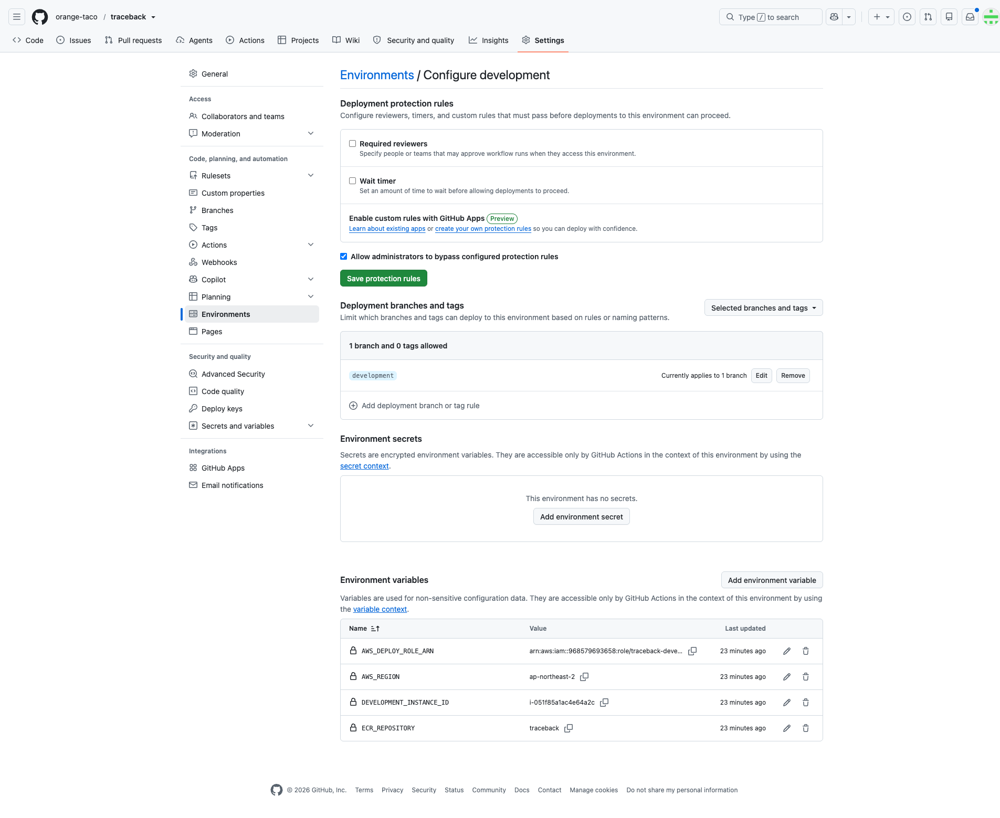
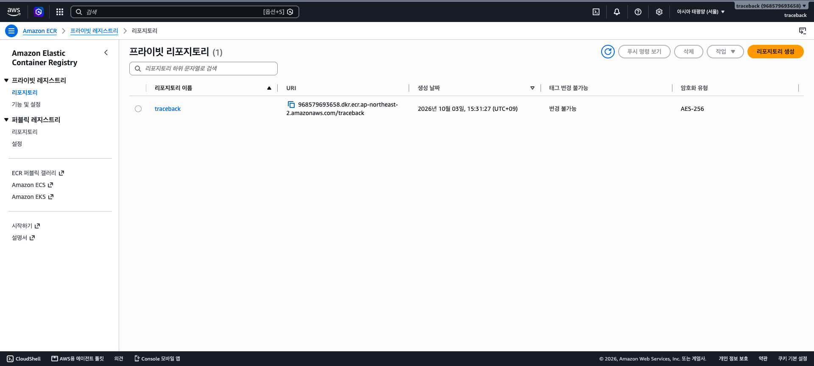

두 저장소의 배포 경로를 나란히 봅니다. 백엔드 development는 Actions·ECR·SSM·EC2로, 프런트 development는 별도 Vercel 프로젝트로 향합니다. 각 환경변수를 어디에 저장하고 누가 읽는지도 표시합니다.
두 배포 경로
Client → Vercel
traceback-client · development
Vercel 개발 프로젝트
traceback-client-nine.vercel.app
Server → AWS
traceback · development → Actions
GitHub Environment → OIDC → ECR
SSM → 개발 EC2 → private RDS
각 경로의 실제 설정 위치, 값, 상태는 바로 아래에 있습니다.
Client 배포와 Server 배포
두 저장소는 배포 대상과 설정 저장 위치가 다릅니다. Vercel의 Production 범위는 현재 개발 프로젝트의 브랜치 범위이며 TRACEBACK 운영 환경을 뜻하지 않습니다.
Client → Vercel 개발 프로젝트
traceback-client의 developmentVercel 개발 프로젝트의 Production Branch로 지정. 2026-09-26 SSR 페이지 200 기록.
Vercel Environment Variables · Production 범위DJANGO_ORIGIN=https://api.dev-traceback.com. vercel.ts가 빌드/배포 시 HTTPS origin을 검사하고 인증·API 경로를 rewrite합니다. 2026-10-04 설정·재배포 기록은 있으나 API 응답은 502였습니다.
브라우저 originhttps://traceback-client-nine.vercel.app. FRONTEND_ORIGIN은 클라이언트 문서의 환경별 형식 설명이고 로컬 .env.example은 Vercel에 자동 업로드되지 않습니다.
Actions가 AWS에 배포할 때 쓰는 비밀이 아닌 변수입니다. 서버의 Django secret이나 DB 비밀번호를 이 값으로 채우지 않습니다.
개발 EC2 · /opt/traceback/.env
실제 파일 미확인
각 EC2에서 Django가 읽을 런타임 설정 위치입니다. 템플릿에는 DJANGO_SECRET_KEY, allowed hosts·CSRF origins, TRACEBACK_DATABASE_URL, FRONTEND_BASE_URL, SES SMTP, Kakao 키가 있습니다. GitHub Environment와 자동 동기화되지 않습니다.
main push 후 개발에서 성공한 같은 image digest를 운영 EC2에 승격하도록 workflow가 작성됐습니다. 그러나 현재 production Environment에는 배포 변수도 보호 규칙도 확인되지 않았고 운영 EC2/RDS 배포도 검증되지 않았습니다. 저장소의 .env.prod.git는 자리표시자 템플릿입니다.
운영은 개발 Vercel 프로젝트와 별도 프로젝트, 별도 도메인, 별도 DJANGO_ORIGIN을 사용할 설계입니다. 현재 클라이언트 문서에는 운영 프로젝트가 아직 배포·설정되지 않았다고 명시합니다. 개발 프로젝트의 Production 범위를 운영 설정으로 재사용하지 않습니다.
설정 파일을 읽는 주체: GitHub Environment 변수는 Actions runner, Vercel 변수는 Vercel 배포의 vercel.ts, EC2 .env는 Docker Compose/Django입니다. .env.dev.git·.env.prod.git와 server.env.example은 작성 양식이며 실제 서버 비밀값의 증거가 아닙니다.
검증 상태: workflow와 GitHub development 변수는 확인했습니다. ECR 이미지의 현재 존재·SSM 배포 성공·EC2 런타임·RDS 연결·외부 HTTPS는 별도 확인이 필요합니다.
선택 이유와 실제 설정 순서
배포 대안을 어떻게 나눴고 왜 이 구성을 택했나?
프런트와 백엔드를 한 EC2에서 함께 운영하면 대상이 하나지만 SSR 빌드·API·DB·TLS를 그 서버에서 함께 관리해야 합니다. TRACEBACK은 클라이언트 SSR은 Vercel, Django와 private RDS는 AWS로 분리했습니다. 백엔드 이미지는 ECR에 고정하고 SSM으로 EC2에 배포합니다. 더 관리형인 컨테이너 서비스나 로드 밸런서를 둘 수도 있지만 현재 작은 개발 환경은 EC2 한 대와 비용·운영 범위를 기준으로 설계했습니다. 운영 환경은 아직 준비되지 않았습니다.
Client · Vercel 개발 프로젝트에서 한 설정
Vercel 개발 프로젝트를 traceback-client 저장소에 연결하고 Production Branch를 development로 지정했습니다. 이 프로젝트의 Environment Variables 중 Production 범위에 DJANGO_ORIGIN=https://api.dev-traceback.com을 저장하고 재배포했습니다. 이 범위 이름은 Vercel 프로젝트 안의 배포 범위이며 TRACEBACK의 production 인프라가 아닙니다. 2026-10-04 기록에서 rewrite는 적용됐고 API는 502였습니다.
코드 연결:vercel.ts 1행이 process.env.DJANGO_ORIGIN을 읽고, 8–15행이 HTTPS origin 형식을 검사하며, 20–37행이 인증·API 세 경로의 rewrite를 만듭니다. client development · 원문
Server · GitHub Environment와 AWS 대상에서 한 설정·캡처
GitHub 저장소 Settings → Environments → development에서 배포 브랜치를 development로 제한하고, 네 변수를 입력했습니다. Actions는 OIDC로 traceback-development-deploy role을 맡아 traceback ECR repository에 이미지를 저장하고 SSM으로 EC2를 지정합니다. 개발 EC2 자체에는 별도 /opt/traceback/.env가 필요하며 그 실제 내용은 확인되지 않았습니다.

2026-10-03 캡처 · GitHub Environment development의 브랜치 제한과 AWS_ROLE·REGION·INSTANCE_ID·ECR 변수. 현재 변수 값은 위의 2026-10-08 API 확인값을 기준으로 읽으세요.

2026-10-03 캡처 · 서울 리전 private ECR repository traceback. 이 화면은 이미지가 배포됐다는 증거가 아닙니다.
AWS·GitHub 용어
GitHub Environment: Actions job이 읽는 환경별 변수와 배포 규칙의 장소. OIDC/IAM role: GitHub job이 장기 AWS 키 없이 일시적인 AWS 권한을 받는 연결. ECR: 컨테이너 이미지를 저장하는 AWS registry. SSM: EC2에 원격 명령을 보내는 배포 경로입니다.
일반 배포·코드 용어
CI/CD: 변경 검사와 배포 자동화. 이미지 digest: 내용으로 고정한 이미지 식별자. 환경변수: 실행 환경이 프로그램에 주는 설정값. Vercel 변수, Actions 변수, EC2 .env는 서로 다른 프로그램이 읽습니다. migration: DB 구조를 코드 변경에 맞추는 단계입니다.
현재 확인 범위
workflow와 GitHub development 변수는 확인했습니다. 실제 배포 완료 여부와 외부 HTTPS·DB 연결은 CI 설정만으로 증명되지 않습니다. production Environment는 2026-10-08 확인 시 변수와 보호 규칙이 없어 운영 배포 준비가 완료되지 않았습니다.
코드 확인 기준: backend development 9a8794919142 · client development afd7664ce2e1. 설정 근거는 해당 단계 바로 옆에 표시했습니다. AWS·Vercel 콘솔 관찰값에는 날짜를 붙였습니다.